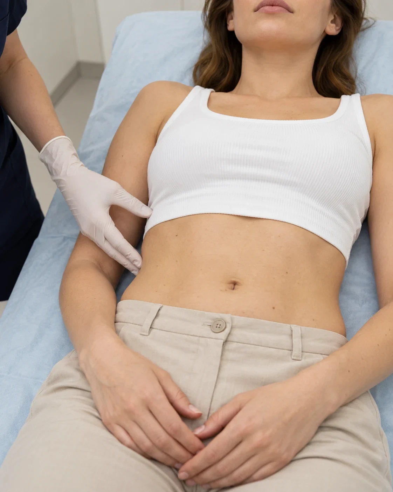

RSL-скульптурирование в Нижнем Новгороде в «Бетта Клиника»: нехирургическое моделирование тела
В современном мире многие люди обращаются к различным методам коррекции фигуры и улучшения состояния кожи. Одним из таких методов является RSL-скульптурирование в Нижнем Новгороде — инновационная процедура, которая позволяет достичь желаемых результатов без хирургического вмешательства. Это метод коррекции фигуры и улучшения качества кожи, основанный на использовании радиочастотной энергии и селективного лазера.
Центр лазерной и врачебной косметологии «Бетта Клиника» Нижний Новгород для проведения RSL-скульптурирования использует современное оборудование – Beautylizer. Он генерирует импульсы радиочастотной и лазерной энергии, которые проникают в глубокие слои кожи и воздействуют на жировые клетки, коллаген и эластин. Это приводит к разрушению жировых клеток, стимуляции выработки коллагена и эластина, а также улучшению кровообращения и лимфодренажа.

Что дает?
- 01Избавление от целлюлита
- 02Удаление локальных жировых отложений
- 03Устранение дряблости кожи
- 04Улучшение кровообращения
- 05Стимуляция выработки коллагена и эластина
- 06Снятие стресса